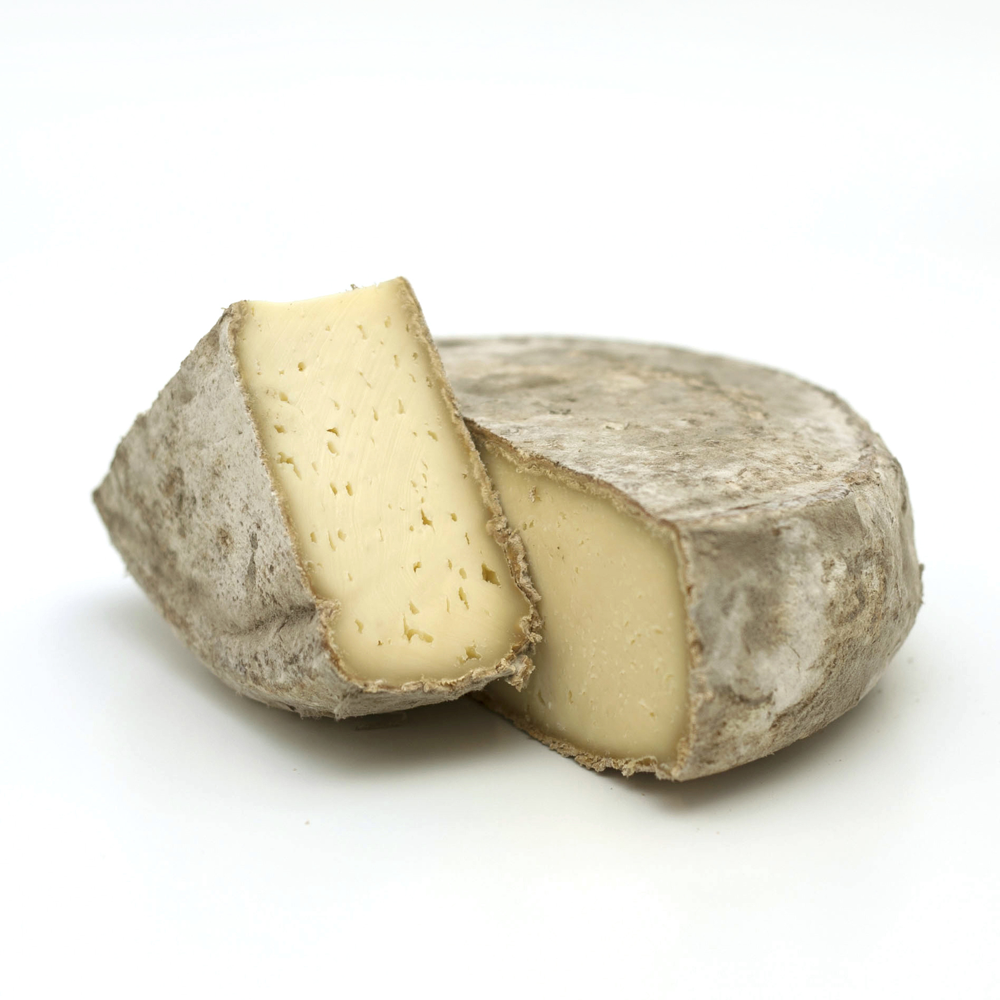

Choose a
soft cheese
Choose a
hard cheese
Choose a
blue cheese
British, unpasteurised, ewes milk
Creamy and light in flavour
Intensity: 2/5
English, washed rind, cows milk
Nutty, rich and a bit smelly
Intensity: 3/5
French, goats milk
Smooth and packs a punch
Intensity: 3/5

English, goats milks
Semi-hard, light and well-rounded
Intensity: 2/5
Spanish, ewes milk
Fruity tang with a soft mouth feel
Intensity: 3/5
English, cows milk
Rich and crumbly with considerable bite
Intensity: 4/5
English, cows milk
Semi-soft, creamy and full of flavour
Intensity: 4/5
French, cows milk
Creamy, very rich and strong aftertaste
Intensity: 5/5
English, cows milk
Crumbly and nutty; it’s a classic for a reason
Intensity: 4/5
Drag the cheese on cheese board

British, unpasteurised, ewes milk.
Creamy and light in flavour.
Intensity: 2/5